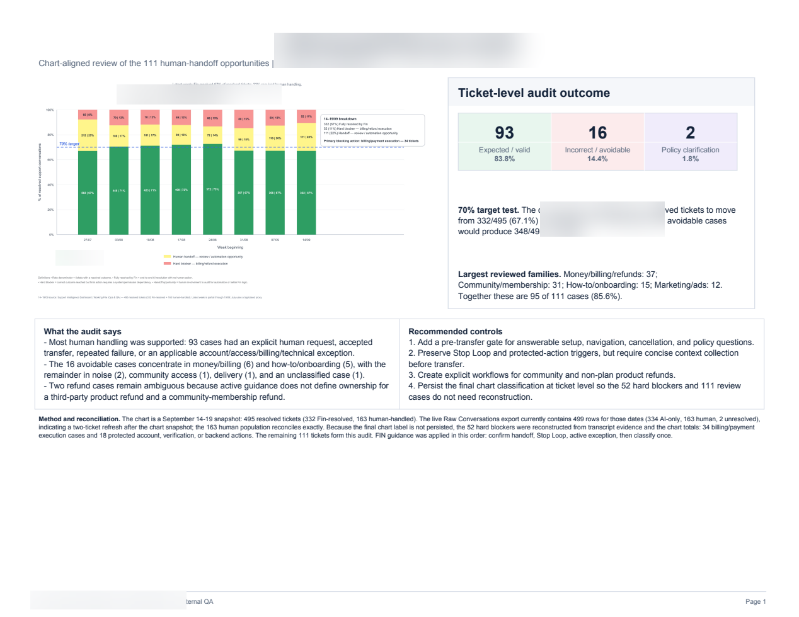

Support quality audit
Support Handoff Review Audit
Chart-aligned audit of human handoffs, outcomes, and opportunities to reduce avoidable escalations. The report turns ticket-level review into concrete controls for the support team.
Open sample ↗